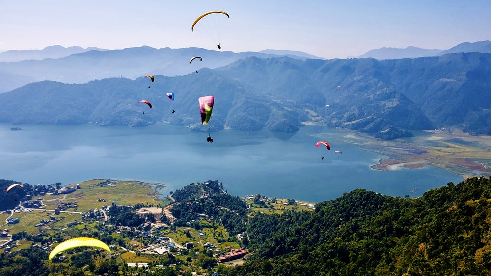
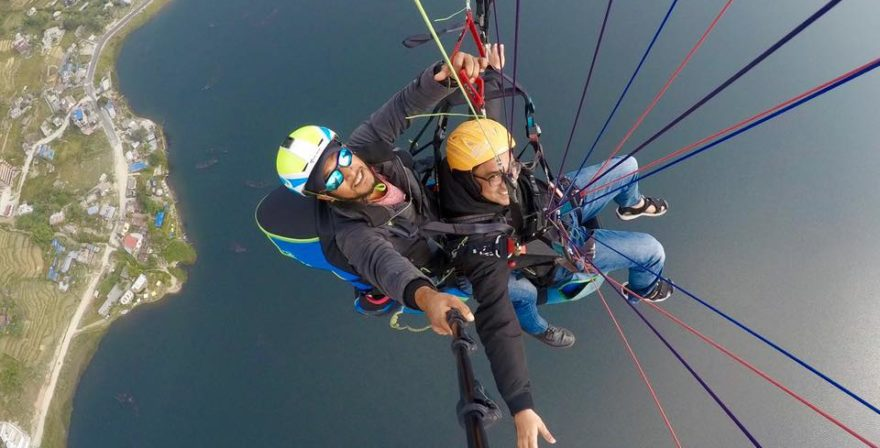
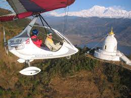
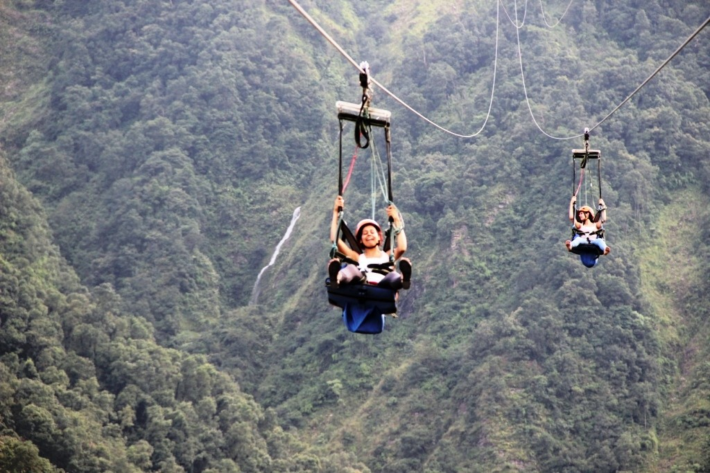

Travel Fantasy
"We are like a friends in your trip"
POKHARA
Pokhara is Nepal's number 1 adventure and leisure destination, a gateway to treks in the Annapurna region with plenty of entertainment for individual travellers and their families. In Pokhara you can experience the excitement of adventure: boating, hiking, pony rides, paragliding, bungee, zipline or simply relaxing at one of the several lakes in the valley.
Pokhara will overwhelm you with its natural beauty and great photo ops. Walk along the shores of the Fewa Lake, enjoy the greenery surrounding you and gaze at the spectacular panoramic view of the Himalayan peaks of the Annapurna Massif. Brightly painted wooden boats add vibrant colors to the greenery, while paragliders float down slowly from above. Flying over the lake is probably going to be one of the highlights of your travel experience in Nepal.
Trekking in the Annapurna from Pokhara
Pokhara is well-known as the starting point for numerous trekking trails and expeditions in the Annapurna . Most trekkers heading for the Annapurna region make Pokhara their first stop, or as a relaxing station before heading out for some serious hiking.So, one may enjoy boating and reading books, observing the serenity of nature, sipping on your favourite drink, either in local restaurants or at a blues bar, or one may simply enjoy sightseeing or cycling around the valley. There are rows of souvenir shops in the market section of the city. Pokhara produces some of the finest handicrafts in the country. Besides the many activities to engage in around the city, a short hike to Sarangkot is highly recommended. With magnificent views of astounding sunsets, sunrise, and of the entire city below, this hike is well worth the sweat.This place is so romantic that it works like Viagra. Devi’s Falls or David’ Fall as some like to call it, is the popular spot where the stream disappears underground, and some distance out of the city is the Mahendra Gufa, a series of caves full of stalagmites and stalactites besides the numerous bats that live within. You will also be confronted by the towering peak of Mt. Machhapuchhare (Fishtail Mountain for some) that completely dominates the view from here.
Enjoy your wanderful trip to pokhara. This is our small project and unfortunately, we are only limited to Nepal right now. But, we believe that we will slowly but surely be available all over the globe in just a small amount of time. Meanwhile, we have a good deal, Meanwhile, enjoy your trip to Pokhara !
Things to do in Pokhara
   Know about our offers & book your tickets now!
Contact No.: +977 9849286579